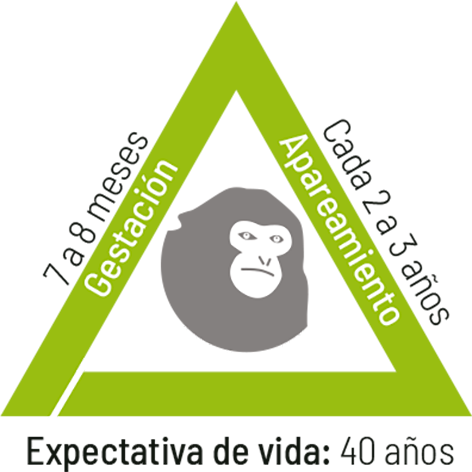

Mapa de distribución
Alimentación y actividad diaria
Acróbatas de la selva
Amenazas y conservación
Historia de vida
- 
- Gestación

- Apareamiento
- Expectativa de vida
Los Siamang son unos de los pocos mamíferos en el mundo que forman pareja de por vida. En esta especie, el macho trabaja en el cuidado parental de las crías y junto con la hembra, conviven estrechamente en familia.
Morfología
Los Siamang pertenecen a la Superfamilia de los Himinoideos, los que agrupan a los primates sin cola, incluyendo al humano.